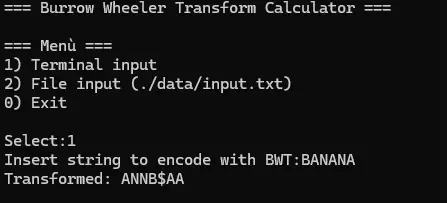
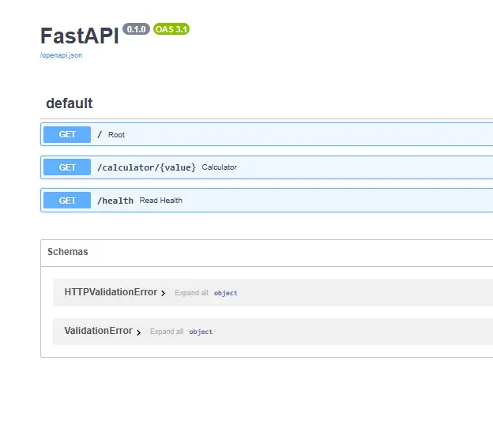

To develop this project, many different solutions have been applied:
- Terminal Application
- FastAPI Client-Server Application
- Normal Client-Server Application
Other than that, there is also the chance to just use the transformation script for debug.

It is often needed to compress data in order to efficiently send it over the network. To do this we first need a special algorithm to transform the string to compress in order for it to be ready for compression. This is where the Burrows Wheeler Transform algorithm comes into play. In our solution, we develop our own Burrows Wheeler Transform python script. The script is then used by the server solutions we developed to make the algorithm available for the services which are then going to compress the data.
Often, to transmit data, we have to compress it, but to do this we first need to prepare it.
This is where the Burrows Wheeler Transform Algorithm comes in handy.
The objective of this project is to create a server that makes it possible for clients
to send strings, and then be received after being transformed by the server.

To develop this project, many different solutions have been applied:
Other than that, there is also the chance to just use the transformation script for debug.
It is now possible to download the code in my github repository. Download Code and follow the steps to clone the code in local and then execute it in your local machine! Other than that, it is also possible to run the server side on a machine and then access it through a second machine in the network. To do this, you just have to fix the server configuration if you want to use the normal client-server solution.

Try the Burrows-Wheeler Transform algorithm with your own input or use one of the examples below:
Original string:
BWT Encoded: